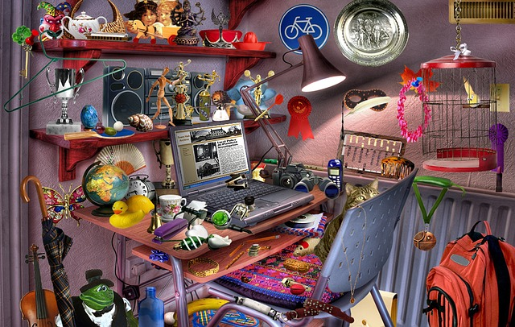

What You Should Know - Scratch: Hiding in Plain Sight
 Important Vocabulary
Important Vocabulary
- Sprite – in Scratch a Sprite is an image that can be programmed to move or respond to events
- Script – written text for a play, animation, or game
- Point – an exact location represented by a dot
- Line – a straight, one-dimensional figure that extends in both directions without ending
- Line Segment – part of a line between two points that can be measured
- Ray – part of a line that has one endpoint and goes on infinitely in one direction
- Parallel – two lines that are in the same plane, never intersect each other and are the same distance apart
- Perpendicular – lines that intersect at a right angle
- Acute Angle – an angle less than 90 degrees
- Right Angle – an angle that measures exactly 90 degrees
- Obtuse Angle – an angle greater than 90 degrees
Hidden Pictures
Hidden object games are popular brain games and have many benefits. You can improve your memory, vocabulary, focus, and visual perception by playing hidden picture games. The first hidden objects games were printed in magazines like I Spy and Highlights for Children, or created as books like Where’s Waldo. Now we have Hidden Picture apps we can download and play on our phones.

Geometry
Geometry is a branch of mathematics that deals with the shape, measurements, and dimensions of objects. This includes points, lines, angles and surfaces. Geometry is one of the oldest branches of mathematics, which comes from the Greek words, ‘geo’, meaning earth, and ‘metria’, meaning measure. Geometry is everywhere around us.
Select each item to learn more.
Point
A point is an exact location represented by a dot.
Line
A line is a straight, one-dimensional figure that extends in both directions without ending.

Line Segment
A line segment is part of a line between two points that can be measured.
Ray
A ray is part of a line that has one endpoint and goes on infinitely in one direction.
Parallel
Parallel means two lines that are in the same plane, never intersect each other and are the same distance apart.
Perpendicular
Perpendicular means two lines that intersect at a right angle.

Acute Angle
An acute angle is an angle less than 90 degrees.
Right Angle
A right angle is an angle that measures exactly 90 degrees.

Obtuse Angle
An obtuse angle is an angle greater than 90 degrees.
Scratch Paint Editor
Did you know you can edit or even draw your own Sprites in Scratch using the Paint Editor. You can use this tool to help conceal the geometric figures you hide in you animation. Once you have either chosen or created a background you can draw angles, rays, lines, and shapes to hide in plain sight. You can change the size and direction of your Sprite by using the editing tools below the Stage screen. Look at the image of the cat below. Do you see how the right foot and leg of the Sprite form an obtuse angle? What shape do you see in its ear? Geometry is around us in everyday objects, you just have to look closely.
Scratch Extension Coding Blocks
Scratch is a visual-based coding language that uses coding blocks. The blocks connect together to form strings of code. There are additional coding blocks you can use to enhance your code. These can be found by clicking the blue icon at the bottom of the left corner of the screen next to the block categories.
Once you click the extension block you will have access to many different blocks, including Music, Pen and Text-to-Speech blocks. Selecting these extensions will add additional coding blocks at the bottom of the blocks category section. Choose the Text-to-Speech extension and you can narrate your animation. There are even options to change the tone or language of your narration.
Career Connection and Real-World Application
Software Application Developer
Software Application Developers use their knowledge of programming languages to design, test, fix, and implement software applications on computer. Do you love playing video games? What if you could work for a company that develops games like Minecraft or Super Mario Brothers? Software application developers create new features for games, write code, and debug existing programs. They are problem-solvers and often work in teams.
CAD Engineer
A CAD Engineer works with computer-aided design (CAD) technology to design projects. Computer-aided design is the use of computers in the design process to build two-dimensional or three-dimensional products. CAD Engineers work with architects and other engineers to produce detailed construction or design plans.